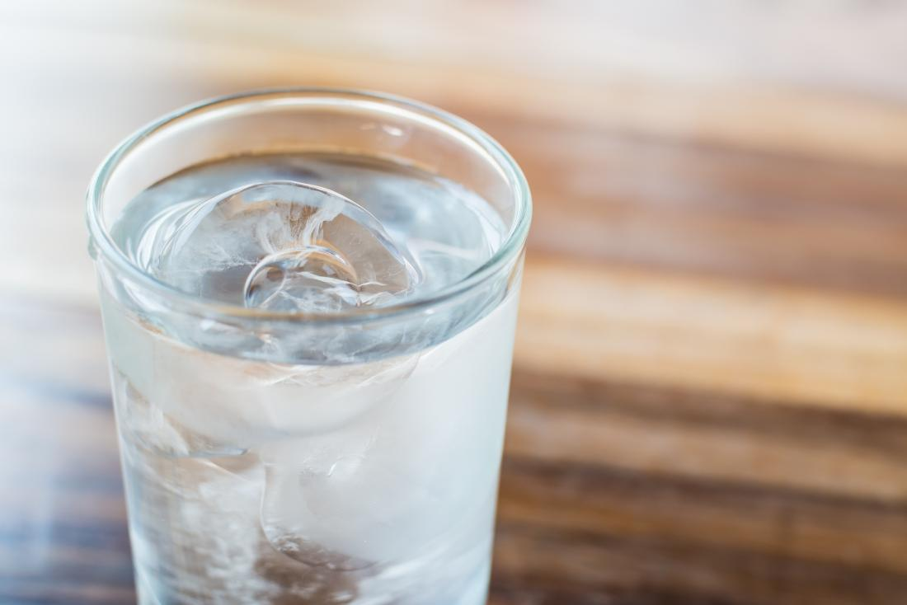

Index | Dirt Cups | Beef Stew | Ice Water
Ice Water

Sometimes I get back from a run, home from work, or take too long of a shower and I just get thirsty. In a pinch, this is what I do to quench my thirst.
Ingredients
- 8 fl. oz. water
- 7 standard U.S. ice cubes
Steps to Make It
- Take a bottle of water and place on counter.
- Get a glass, cup, bowl, Yahtzee Shaker, or any other liquid retaining container and place on counter next to the bottle of water.
- Fill up ice cube tray with water and place in freezer (wait 3 hours) (Note: if you have an ice cube dispenser, skip step 3).
- Pour water into container.
- WARNING: Stand back in case ice explodes.
- Wait 1 minute.
- Swirl with spoon.
- Find a comfortable couch, sip, and enjoy.